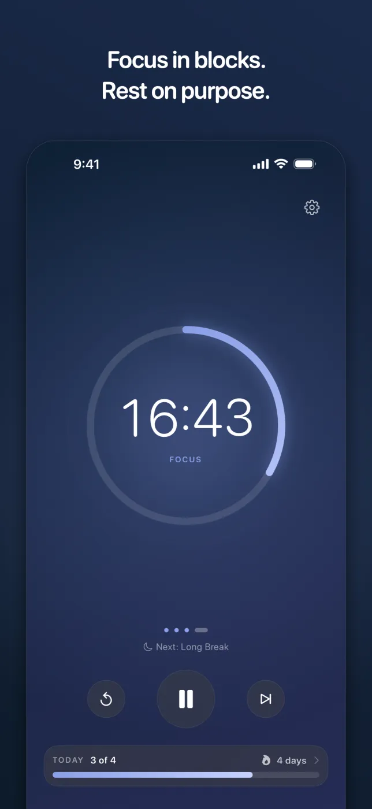
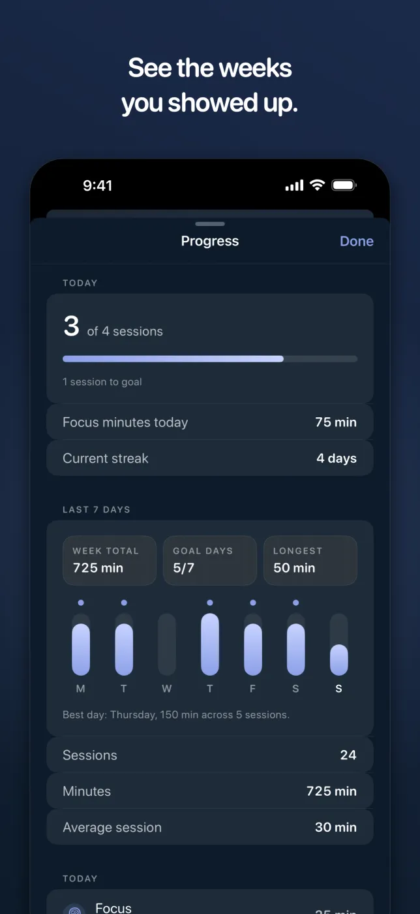
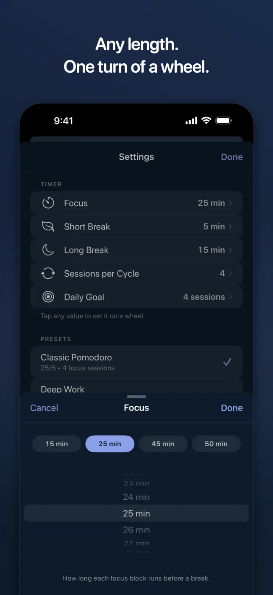
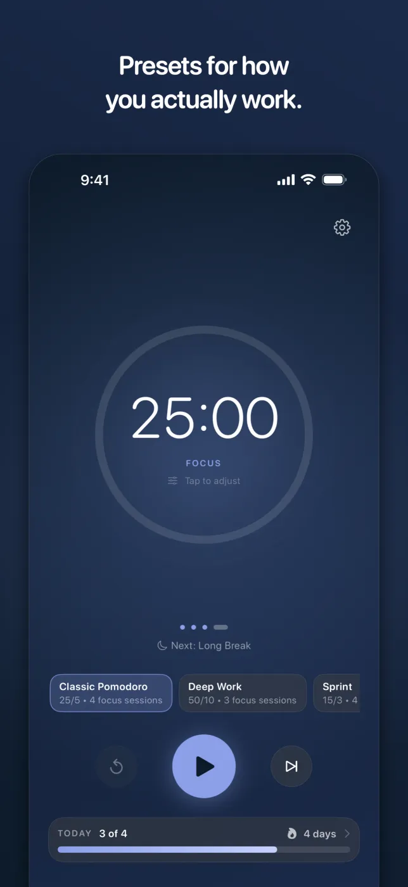
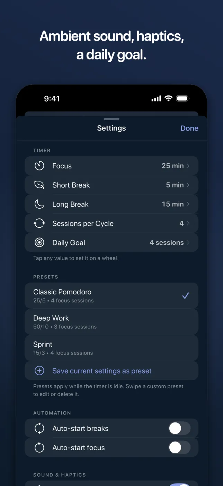
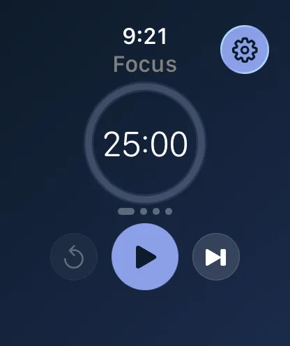
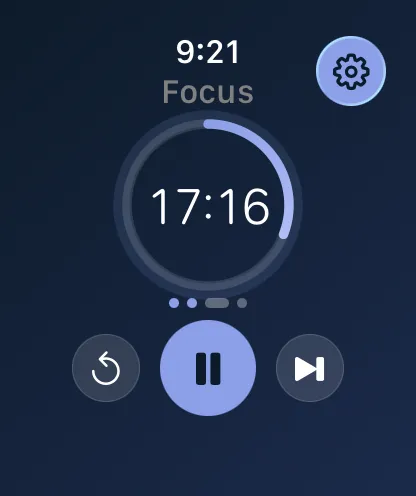
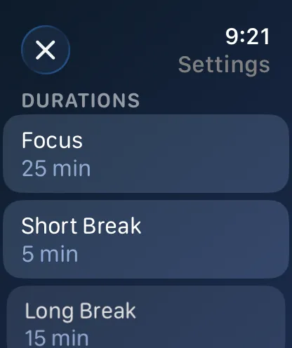

Productivity • Focus Timer
Version 3.1 iPhone Apple Watch Live Activities SiriCalmly: Focus Timer
Focus in blocks. Rest on purpose. Calmly is a Pomodoro timer for people who want to concentrate without being managed — pick a length, start the ring, and let the app keep the rhythm of work and rest. Version 3.1 is a full redesign on iPhone and Apple Watch: one countdown inside a progress ring you can read across the room, any session length one turn of a wheel away, and progress with a screen of its own.
No account, no sign-in, no subscription. Calmly has no networking code at all, so your sessions never leave the device.
Download on the App StoreScreenshots
The 3.1 Redesign, on iPhone and Watch
iPhone





Apple Watch



Features
Built for Consistent Focus
A Ring You Can Read Across the Room
One countdown inside a progress ring that fills as the session runs, tinted to what you are doing — lavender for focus, mint for a short break, orchid for a long one. Behind it, a soft halo breathes on a four-second cycle to settle your breathing against.
Presets for How You Actually Work
Classic Pomodoro (25/5), Deep Work (50/10) and Sprint (15/3) are built in. Save your own from whatever you are running now, and switch between them in a tap while the timer is idle.
Any Length, One Turn of a Wheel
Focus, breaks, sessions per cycle and your daily goal are all set on a wheel, with the lengths people actually pick one tap away. Tap the countdown itself to change the session you are already in.
Progress Has Its Own Screen
A daily session goal, your current streak, and a seven-day chart of focus minutes with the days you hit your goal marked. Every finished session is kept and grouped by day, so you can see the weeks you showed up.
Ambient Sound
Rain, White Noise, Café, Campfire and Lake, at whatever volume suits the room. Import your own audio and Calmly keeps its own copy, so it keeps working offline.
Rebuilt on Apple Watch
Start, pause, skip and reset from your wrist, with durations set by the Digital Crown instead of dragged along a slider. The breathing animation stops when your wrist drops, so it is not animating against a screen you are not looking at.
Complications That Tick
Keep the countdown on your watch face in four styles — circular, rectangular, corner and inline. It ticks every second rather than waiting on a system refresh, so it always agrees with the app.
Without Opening the App
While a session runs, the countdown lives in the Dynamic Island and on the Lock Screen. Ask Siri to start a focus session, pause it, or pick it back up.
Accurate When You Look Away
Calmly counts against the clock rather than a ticking loop, so a session stays exact through backgrounding, a locked screen, or a phone left face down. A notification tells you when the block ends.
Built for Everyone
Every label scales with your text size. VoiceOver describes the ring, the session dots and the weekly chart. Reduce Motion stills the breathing halo, and Reduce Transparency drops the soft-focus effects.
Private by Construction
No account, no sign-in, no analytics. Calmly has no networking code at all — your sessions are stored on your device and never sent anywhere, because there is nowhere for them to go.
Premium. Once.
Pay once, own it forever. No subscriptions and no in-app purchases — there is no StoreKit code in the app at all, so there is nothing left to sell you after the download.
Our Thinking
Focus is a skill.
Your tools should protect it.
Most productivity apps are ironically terrible for productivity. They demand your attention with streaks, badges, social features, and upsell prompts — the exact kind of friction that pulls you out of focus.
Calmly is built on a different philosophy: a good focus timer should be invisible. You open it, you start working, and it quietly does its job in the background. The 3.1 redesign went the same way — the home screen lost its stats, status pills and paragraph of explanation, which collapsed into a single Today bar along the bottom. Settings went from nine sections to five.
No gamification. No push notifications encouraging you to "keep your streak alive." No social feed. Just a beautifully simple timer that respects your time and your attention.
Need Help?
Support and Privacy
Need help with presets, the Progress screen, Live Activities, Siri, imported ambient audio, or the Apple Watch app and its complications? Use the support page or review the Calmly privacy policy below.